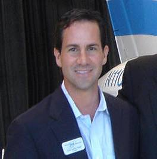

Dean Andrew Kantis has been a tireless advocate for LASIK patients with bad outcomes. He created the website LifeAfterLasik.com to inform the public of issues surrounding LASIK. Through his website and advocacy work, Dean Kantis has reached out to thousands of LASIK patients, sharing his knowledge and experience with the confusing and often-disappointing maze of therapies for LASIK complications.Dean Kantis has literally searched the world over for solutions for himself and the thousands of patients now living with LASIK complications. He advises patients who are considering LASIK to "do your homework". It's not simply a matter of choosing the best surgeon. There are universal adverse effects of LASIK which are not adequately disclosed to patients before surgery. Risks and complications are downplayed by LASIK surgeons in order to make a sale. Debilitating dry eyes and night vision disturbances are common after LASIK and may be permanent. Prevention is the best cure - Don't gamble with your vision.
Testimony of Dean Andrew Kantis at the April 25, 2008 FDA hearing on LASIK
Good morning, FDA Panel, honored guests, and fellow victims of the flawed and unpredictable LASIK eye surgical procedure. My name is Dean Andrew Kantis, founder of lifeafterlasik.com. For the past nine years, I have spent $30,000 seeking restoration of my ruined vision, only to find out there is no cure. Through my website, hundreds of victims have contacted me expressing their suicidal thoughts. Some have already committed suicide. It is always the same story: I was lied to. The name says it all, "lay-sick, lay-sick." When I began to speak out against LASIK years ago, I encountered a severe backlash. Continued page 25.
Video of Patient Advocate, Dean Kantis, testifying at FDA hearing on LASIK
Watch slide presentation given by Dean Kantis at the FDA hearing: Link
FDA Examines Laser Eye Surgery Complaints - CBS Channel 4 Miami 4/24/2008
From the article: Dean Kantis, who is scheduled to speak Friday, says his vision has suffered since his Lasik surgery in 1998. "My life is a blur," Kantis said. "When I look at a computer screen I see two pages; when I look up at the moon, I see three of them." Double vision, night-vision disturbances and dry eye are among the side effects outlined in literature given to Lasik patients, but Kantis and others say physicians often gloss over the risks. "Just before the procedure they shove the informed consent form in front of you, but you just sign it and no one reads the fine print," Kantis said.
Roger Davis, Ph.D., Michael Patterson, Ph.D., and Dean Kantis interviewed by CBS News
EyeWorld Weekly News 3/10/2008: Dean Kantis' petition to the FDA to reconsider LASIK regulations
From the article: In a ground breaking interaction, the U.S. Food and Drug Administration (FDA), approached the American Society of Cataract and Refractive Surgery (ASCRS) in the fall of 2006 for guidance in designing a study to that would identify extremely dissatisfied post-LASIK patients, define their significant symptoms, and the impact of those symptoms on quality of life.
The call for this study was spurred by several FDA petitioners who urged a moratorium on eye surgeries that were not medically necessitated. Dean Andrew Kantis and Michael Patterson, Ph.D., petitioned the FDA to reconsider current regulations and enforcement procedures for LASIK or phakic lens-related medical devices.
NBC News report on FDA LASIK hearing 4/25/2008 - Dean Kantis shown speaking